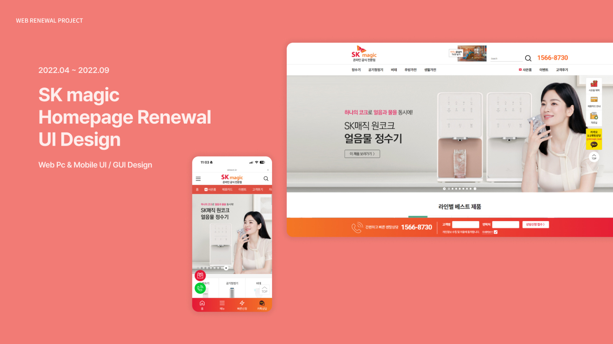
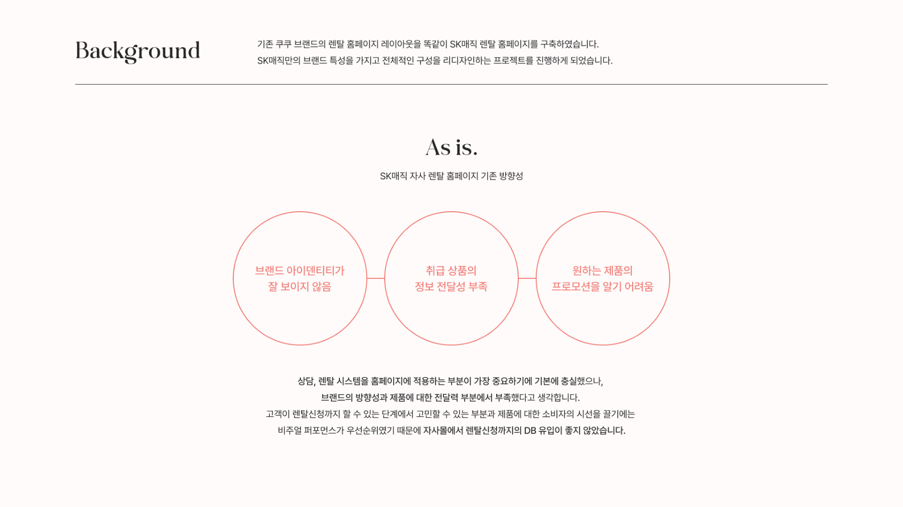
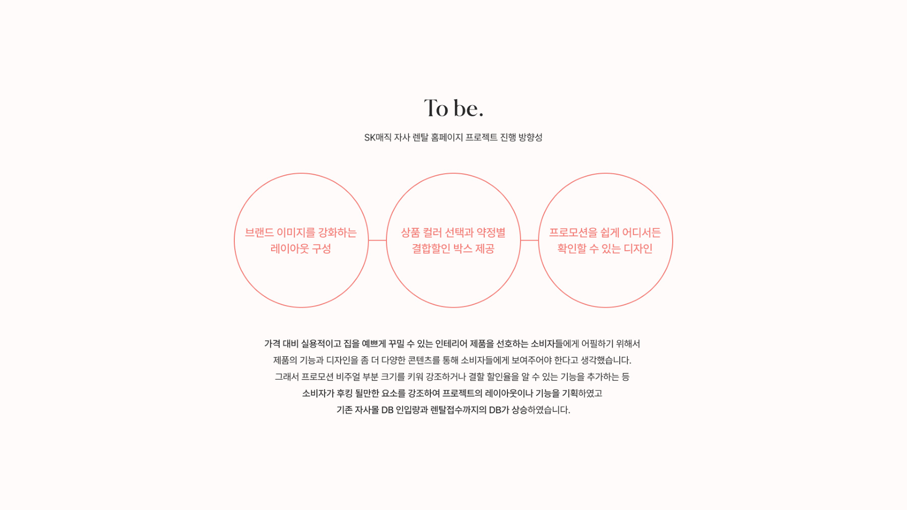
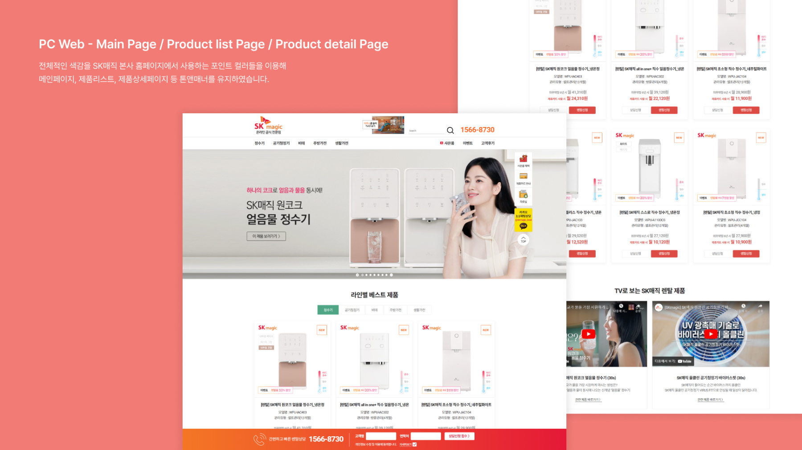
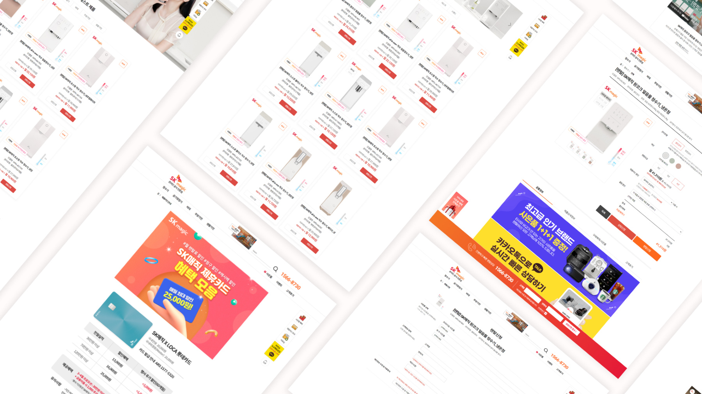
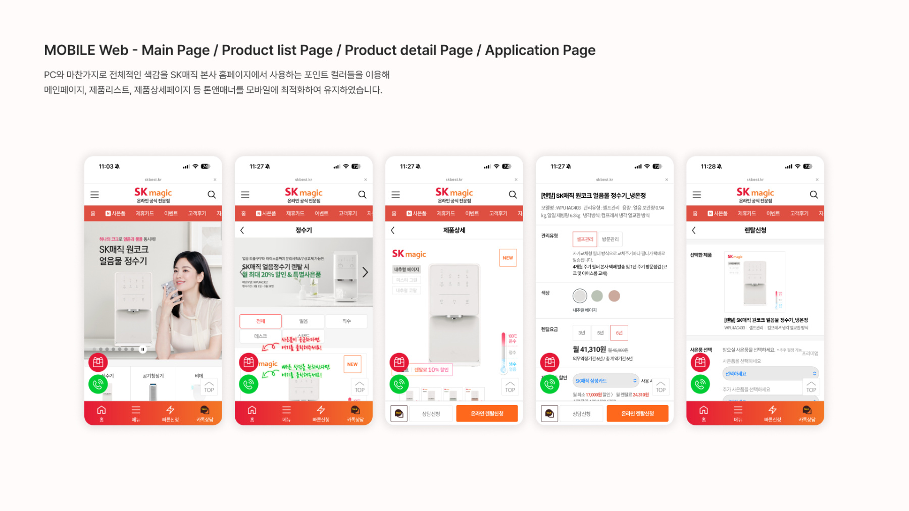

Professional Work · Web & UI Design
SK magic
Company work spanning desktop and mobile interfaces for a home-appliance website.
Created as part of company work. The boards below preserve the original portfolio presentation.
Original project boards are presented in Korean.
01 · Project overview

02 · Background & redesign direction


03 · Desktop website


04 · Mobile website
